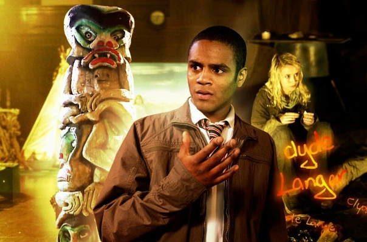

The Curse of Clyde Langer
Дата выхода: 10-11 октября 2011
Формат: 2 эпизода по 30 мин.
| Варианты озвучек: | * Разные: смотрите по инструкции |
|---|---|
| Скачивание и просмотр: |
Расследование приводит Сару Джейн и её команду в музей, где один из экспонатов - древний тотем. После того, как Клайд дотрагивается до него, его жизнь переворачивается с ног на голову. Семья и друзья начинают вести себя странно и изгоняют Клайда из своих жизней - теперь он живёт один на улицах Лондона. Лишь одна девушка по имени Элли оказывает ему дружескую поддержку. Что же происходит на самом деле?
